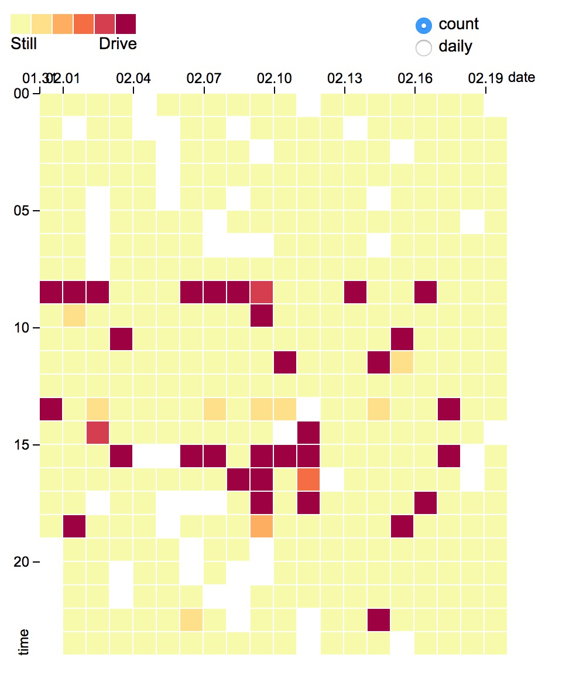
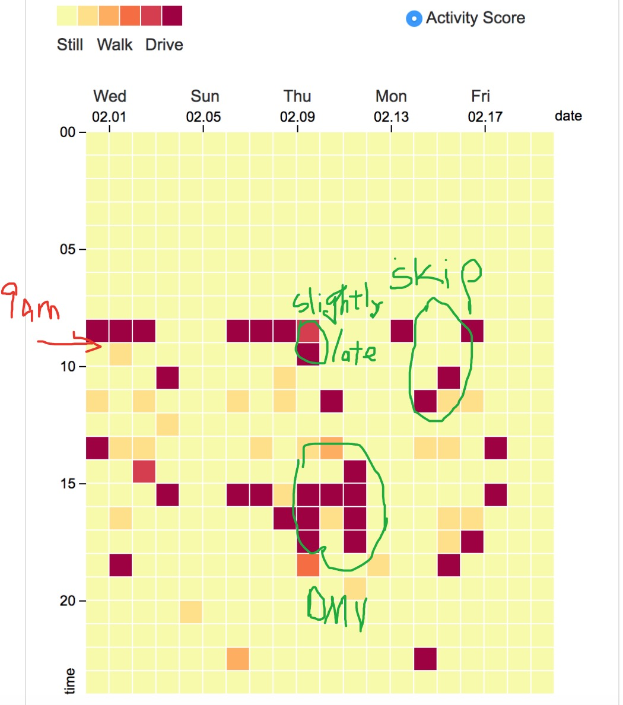

The data about the driving activity is pretty complete except for sometimes there are hours when no activity record is being created. This could due to data unavailability, e.g. IOS update or the activity recognition just cannot make an inference on what the current activity is. To visualize such incompleteness, I have saved a picture which describes how does the data look like before I manually cleaned it up. The impact of this is not bad because all missing time are not driving hours, I can simply pick the closest data entry to represent the missing one
You see the white blocks in the graph? There are no data for that particular hour.
So I have manually put in the data for that hour. The data that I chose is a duplicate of the closest data entry
The data is very coherent to my expectation. You can visualize it from the graph that all driving hours are captured and displayed properly on the graph
I retrived over 6000 data entries for this activity experiment so that I can see the patterns of my driving hour. Since I drive every weekday and I see at least two driving hours on weekday, therefore I can make sure that the data corresponds to reality so that i can present it here.
So the red means I am driving in that hour.
The data is extremely correct! Here is my confession, I have 9 am class from Monday to Thursday and I skipped two 9.am classes in this time interval and they are captured in the graph.
In Feb 9th and Feb 11th afternoon, I took my friend to DMV to take road test, I drove a lot in these two days
We can trust the data since it is uploaded directly from my phone, i.e. no intervention or modification. I did not bias my data just because I am using AWARE framework